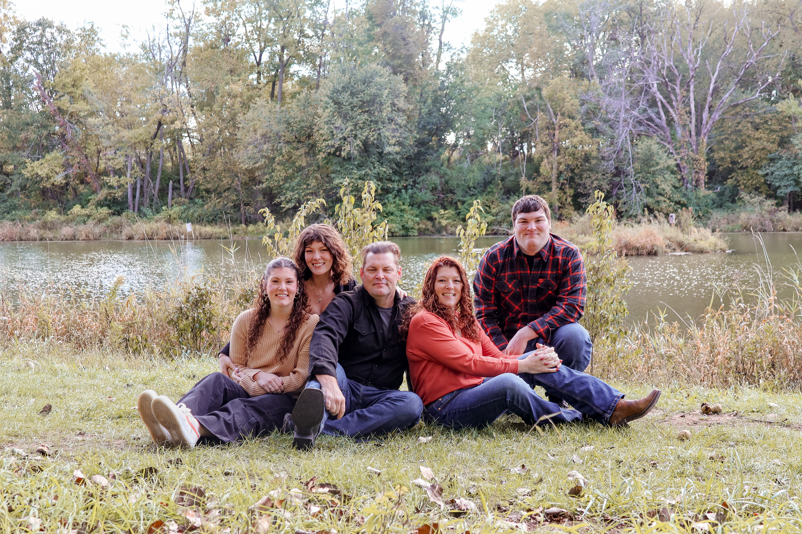
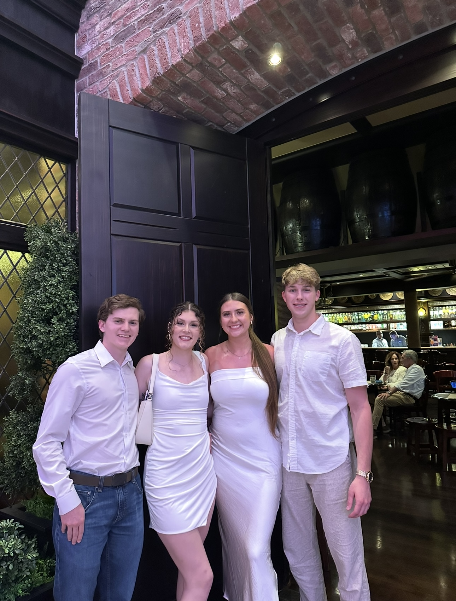

About Emily
 
Hi! My name is Emily Sanders and I am currently a student at The University of Iowa studying Business Analytics and Information Systems! I am originally from California, but my family relocated to Iowa! I currently work at Texas Roadhouse as a server. I am very family oriented and have made friends who are like family during my time at Iowa! I can't wait to see what my future holds and I hope you learn something fun about me today!
Current Curriculum
| Class Name | Monday | Tuesday | Wednesday | Thursday | Friday |
|---|---|---|---|---|---|
| Data Mining | 10:30AM - 11:20AM | 10:30AM - 11:20AM | 10:30AM - 11:20AM | ||
| Data Wrangling | 11:30AM - 12:20PM | 11:30AM - 12:20PM | 11:30AM - 12:20PM | ||
| Introduction to Management | 11:00AM - 11:50AM | 12:30PM - 1:20PM | 11:00AM - 11:50AM | ||
| Business Communication and Protocol | 9:30AM - 10:45AM | 9:30AM - 10:45AM | |||
| Digital Product Management | 2:00PM - 3:15PM | 2:00PM - 3:15PM |